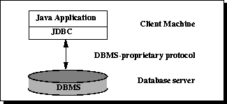
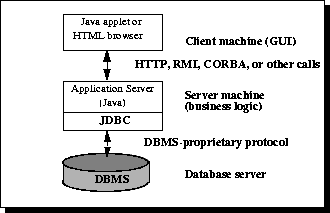

JDBC API は、ユーザーがあらゆる形式の表形式データ、特に関係データベースに保存されたデータにアクセスすることを可能にします。
実行フロー：
データソース（例：データベース）に接続します。
データベースにクエリおよび更新命令を渡します。
データベースの応答を処理し、結果を返します。
JDBC アーキテクチャ
2層アーキテクチャと3層アーキテクチャに分かれます。
2層

役割：このアーキテクチャでは、Javaアプレットまたはアプリケーションがデータソースに直接アクセスします。
条件：Driverがアクセスするデータベースと対話できることが必要です。
仕組み：ユーザーのコマンドがデータベースまたは他のデータソースに渡され、その結果が返されます。
配置：データソースは別のマシン上にある場合があり、ユーザーはネットワーク経由で接続します。これはC/S構成と呼ばれます（イントラネットまたはインターネットの場合があります）。
3層

このアーキテクチャの特別な点は、中間層サービスを導入することです。
プロセス：コマンドと結果はすべてこの層を経由します。
利点：エンタープライズデータへのアクセス制御や、さまざまな種類の更新を追加できます。さらに、アプリケーションのデプロイを簡素化でき、多くの場合にパフォーマンス上の利点があります。
歴史的な傾向：以前は、パフォーマンス上の問題から、中間層はCまたはC++で記述されていました。しかし、最適化コンパイラ（Javaバイトコードを効率的な特定マシンコードに変換する）や、EJBなどの技術の発展に伴い、Javaが中間層の開発に使用され始めました。これによりJavaの利点が際立ち、サーバーコード言語としてJavaを使用することで、JDBCも重要視されるようになりました。
JDBC プログラミング手順
ドライバの読み込み：
Class.forName(driverClass)
//加载MySql驱动
Class.forName("com.mysql.jdbc.Driver")
//加载Oracle驱动
Class.forName("oracle.jdbc.driver.OracleDriver")
データベース接続の取得：
DriverManager.getConnection("jdbc:mysql://127.0.0.1:3306/imooc", "root", "root");
Statement\PreparedStatementオブジェクトの作成：
conn.createStatement(); conn.prepareStatement(sql);
完全な例
import java.sql.Connection;
import java.sql.DriverManager;
import java.sql.ResultSet;
import java.sql.Statement;
public class DbUtil {
public static final String URL = "jdbc:mysql://localhost:3306/imooc";
public static final String USER = "liulx";
public static final String PASSWORD = "123456";
public static void main(String[] args) throws Exception {
//1.加载驱动程序
Class.forName("com.mysql.jdbc.Driver");
//2. 获得数据库连接
Connection conn = DriverManager.getConnection(URL, USER, PASSWORD);
//3.操作数据库，实现增删改查
Statement stmt = conn.createStatement();
ResultSet rs = stmt.executeQuery("SELECT user_name, age FROM imooc_goddess");
//如果有数据，rs.next()返回true
while(rs.next()){
System.out.println(rs.getString("user_name")+" 年龄："+rs.getInt("age"));
}
}
}
追加・削除・変更・検索
public class DbUtil {
public static final String URL = "jdbc:mysql://localhost:3306/imooc";
public static final String USER = "liulx";
public static final String PASSWORD = "123456";
private static Connection conn = null;
static{
try {
//1.加载驱动程序
Class.forName("com.mysql.jdbc.Driver");
//2. 获得数据库连接
conn = DriverManager.getConnection(URL, USER, PASSWORD);
} catch (ClassNotFoundException e) {
e.printStackTrace();
} catch (SQLException e) {
e.printStackTrace();
}
}
public static Connection getConnection(){
return conn;
}
}
//模型
package liulx.model;
import java.util.Date;
public class Goddess {
private Integer id;
private String user_name;
private Integer sex;
private Integer age;
private Date birthday; //注意用的是java.util.Date
private String email;
private String mobile;
private String create_user;
private String update_user;
private Date create_date;
private Date update_date;
private Integer isDel;
//getter setter方法。。。
}
//---------dao层--------------
package liulx.dao;
import liulx.db.DbUtil;
import liulx.model.Goddess;
import java.sql.Connection;
import java.sql.ResultSet;
import java.sql.SQLException;
import java.sql.Statement;
import java.util.ArrayList;
import java.util.List;
public class GoddessDao {
//增加
public void addGoddess(Goddess g) throws SQLException {
//获取连接
Connection conn = DbUtil.getConnection();
//sql
String sql = "INSERT INTO imooc_goddess(user_name, sex, age, birthday, email, mobile,"+
"create_user, create_date, update_user, update_date, isdel)"
+"values("+"?,?,?,?,?,?,?,CURRENT_DATE(),?,CURRENT_DATE(),?)";
//预编译
PreparedStatement ptmt = conn.prepareStatement(sql); //预编译SQL，减少sql执行
//传参
ptmt.setString(1, g.getUser_name());
ptmt.setInt(2, g.getSex());
ptmt.setInt(3, g.getAge());
ptmt.setDate(4, new Date(g.getBirthday().getTime()));
ptmt.setString(5, g.getEmail());
ptmt.setString(6, g.getMobile());
ptmt.setString(7, g.getCreate_user());
ptmt.setString(8, g.getUpdate_user());
ptmt.setInt(9, g.getIsDel());
//执行
ptmt.execute();
}
public void updateGoddess(){
//获取连接
Connection conn = DbUtil.getConnection();
//sql, 每行加空格
String sql = "UPDATE imooc_goddess" +
" set user_name=?, sex=?, age=?, birthday=?, email=?, mobile=?,"+
" update_user=?, update_date=CURRENT_DATE(), isdel=? "+
" where id=?";
//预编译
PreparedStatement ptmt = conn.prepareStatement(sql); //预编译SQL，减少sql执行
//传参
ptmt.setString(1, g.getUser_name());
ptmt.setInt(2, g.getSex());
ptmt.setInt(3, g.getAge());
ptmt.setDate(4, new Date(g.getBirthday().getTime()));
ptmt.setString(5, g.getEmail());
ptmt.setString(6, g.getMobile());
ptmt.setString(7, g.getUpdate_user());
ptmt.setInt(8, g.getIsDel());
ptmt.setInt(9, g.getId());
//执行
ptmt.execute();
}
public void delGoddess(){
//获取连接
Connection conn = DbUtil.getConnection();
//sql, 每行加空格
String sql = "delete from imooc_goddess where id=?";
//预编译SQL，减少sql执行
PreparedStatement ptmt = conn.prepareStatement(sql);
//传参
ptmt.setInt(1, id);
//执行
ptmt.execute();
}
public List<Goddess> query() throws SQLException {
Connection conn = DbUtil.getConnection();
Statement stmt = conn.createStatement();
ResultSet rs = stmt.executeQuery("SELECT user_name, age FROM imooc_goddess");
List<Goddess> gs = new ArrayList<Goddess>();
Goddess g = null;
while(rs.next()){
g = new Goddess();
g.setUser_name(rs.getString("user_name"));
g.setAge(rs.getInt("age"));
gs.add(g);
}
return gs;
}
public Goddess get(){
Goddess g = null;
//获取连接
Connection conn = DbUtil.getConnection();
//sql, 每行加空格
String sql = "select * from imooc_goddess where id=?";
//预编译SQL，减少sql执行
PreparedStatement ptmt = conn.prepareStatement(sql);
//传参
ptmt.setInt(1, id);
//执行
ResultSet rs = ptmt.executeQuery();
while(rs.next()){
g = new Goddess();
g.setId(rs.getInt("id"));
g.setUser_name(rs.getString("user_name"));
g.setAge(rs.getInt("age"));
g.setSex(rs.getInt("sex"));
g.setBirthday(rs.getDate("birthday"));
g.setEmail(rs.getString("email"));
g.setMobile(rs.getString("mobile"));
g.setCreate_date(rs.getDate("create_date"));
g.setCreate_user(rs.getString("create_user"));
g.setUpdate_date(rs.getDate("update_date"));
g.setUpdate_user(rs.getString("update_user"));
g.setIsDel(rs.getInt("isdel"));
}
return g;
}
}